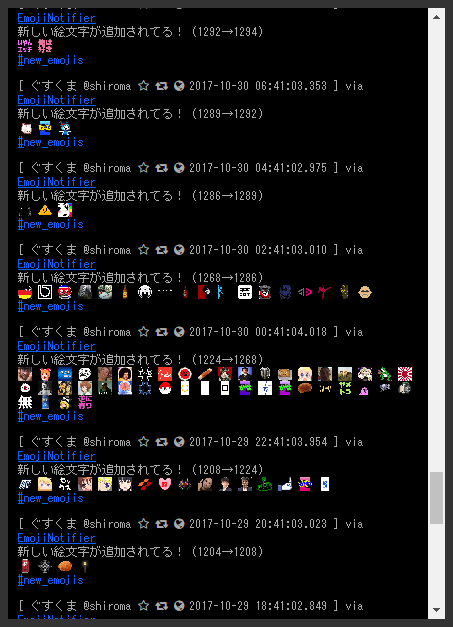

カスタム絵文字検出Bot作りました
最近はTheBOSSが運営するボス丼で遊ばせていただいているぐすくまです。
ボス丼はインスタンスが認識した外部インスタンスのカスタム絵文字をぱｋ自ドメインのカスタム絵文字として取り込むスクリプトを導入しており、総カスタム絵文字数は現時刻時点で1316にも及んでいます。
2時間に1度cronを回してるとのことですが、いかんせん絵文字数が多すぎるので何の絵文字が新たに追加されたかが分からないわけです。
せっかく追加された新しい絵文字が使われずに埋もれてしまうのはもったいない。というか僕が新しい絵文字が入って来たら使ってみたい！という思いがあり。カスタム絵文字検出botを作りました。

動作としては単純なもので、インスタンスのカスタム絵文字取得API(/api/v1/custom_emojis)から一覧を取得し、bot内部で管理しているDBに登録してあるカスタム絵文字一覧にない絵文字と照らし合わせて、ない絵文字はDBに新規登録＆トゥート。…みたいな処理です。
今回Node.jsで初めて作ってみましたが、最近の環境はモジュール入れやすくていいですねぇ。ECMAscript特有の非同期処理がウザいのが玉に瑕だけど。
一応githubで公開してるので、使いたい人がいたら使ってやってください。